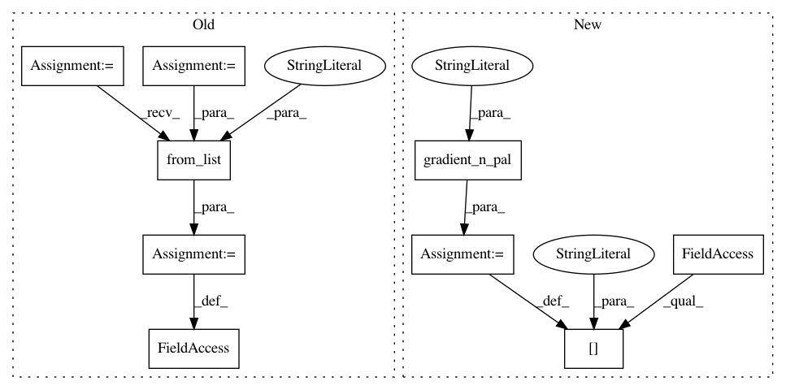

ef4c3489e675b89bea0a193347b8b848496c9551,ggplot/scales/scale_color.py,scale_color_gradientn,__init__,#scale_color_gradientn#Any#Any#Any#,229
Before Change
Create colormap that will be used by the palette
// TODO: Implement values
color_spectrum = colours
self.colormap = LinearSegmentedColormap.from_list(
"gradient2", color_spectrum)
class scale_fill_gradientn(scale_color_gradientn):
aesthetics = ["fill"]
After Change
Create colormap that will be used by the palette
kwargs["palette"] = gradient_n_pal(colors, values, "gradientn")
scale_continuous.__init__(self, **kwargs)
class scale_fill_gradientn(scale_color_gradientn):
In pattern: SUPERPATTERN
Frequency: 3
Non-data size: 9
Instances
Project Name: has2k1/plotnine
Commit Name: ef4c3489e675b89bea0a193347b8b848496c9551
Time: 2015-05-18
Author: has2k1@gmail.com
File Name: ggplot/scales/scale_color.py
Class Name: scale_color_gradientn
Method Name: __init__
Project Name: has2k1/plotnine
Commit Name: ef4c3489e675b89bea0a193347b8b848496c9551
Time: 2015-05-18
Author: has2k1@gmail.com
File Name: ggplot/scales/scale_color.py
Class Name: scale_color_gradient2
Method Name: __init__
Project Name: has2k1/plotnine
Commit Name: ef4c3489e675b89bea0a193347b8b848496c9551
Time: 2015-05-18
Author: has2k1@gmail.com
File Name: ggplot/scales/scale_color.py
Class Name: scale_color_gradient
Method Name: __init__